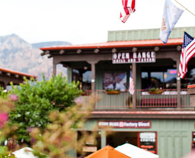
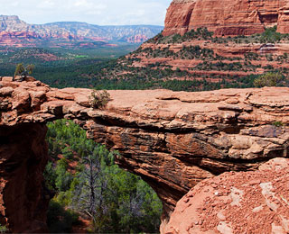

Седона - небольшой городок в Аризоне, заслуживающий большего!
Наши преимущества
-
Жилье Рекомендуем пожить в настоящем мотеле, все как в кино!
-
Сувениры Не только китайского, но и местного производства!
-
Еда Всегда заказывайте фирменный бургер, вы не разочаруетесь!
Рассмотрим 5 причин, по которым Седона круче, чем Гранд Каньон
-
Настоящий городок -№1- Седона не аттракцион для туристов, там течет своя жизнь
 -
Там есть мост Дьявола -№2- Да, по нему можно пройти! Если вы осмелитесь конечно
 -
Небольшая площадь -№3- Все интересные места находятся очень близко
-
Красивая дорога -№4- Ехать в Седону из Лас-Вегаса совсем не скучно!
-
Мало туристов -№5- Большинство едет в Гранд Каньон и толпится там
Заинтересовались?
Укажите предпологаемые даты поездки, и мы покажем вам лучшие предложения гостиниц в Седоне